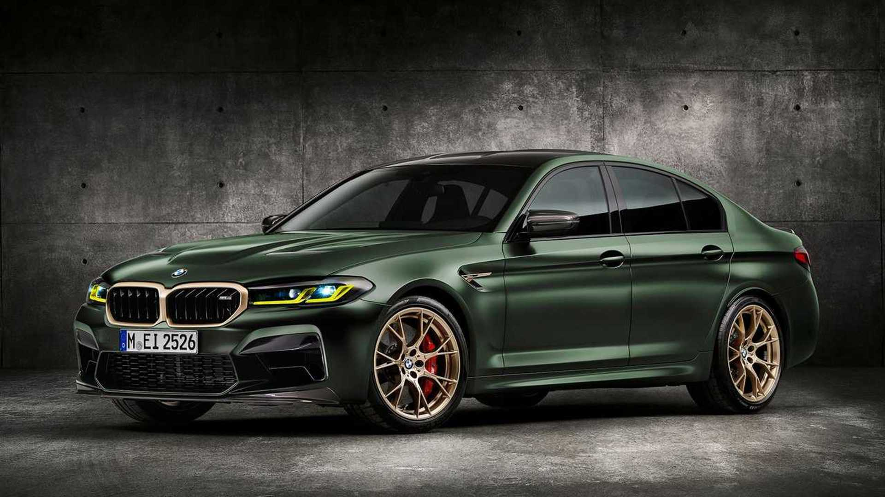

Bayerische Motoren Werke AG, abbreviated as BMW (German pronunciation: [ˌbeːʔɛmˈveː] (listen)), is a German multinational manufacturer of luxury vehicles and motorcycles headquartered in Munich,
Bavaria, Germany. The company was founded in 1916 as a manufacturer of aircraft engines, which it produced from 1917 to 1918 and again from 1933 to 1945.
Mercedes-Benz was founded in 1926 by Karl Benz, Gottlieb Daimler, Wilhelm Maybach and Emil Jellinek, whose daughter Mercedes is our original namesake. With offices in 93 locations worldwide and a corporate headquarters in Stuttgart, Germany, our global presence continues to grow.
From November 2019 onwards, Mercedes-Benz-badged heavy commercial vehicles (trucks and buses) are managed by Daimler Truck, a former part of the Mercedes-Benz Group turned into an independent company in late 2021.
In 2018, Mercedes-Benz was the largest brand of premium vehicles in the world, having sold 2.31 million passenger cars.
Ferdinand Porsche (1875–1951) founded the company called "Dr. Ing. h. c. F. Porsche GmbH"[4] with Adolf Rosenberger[5] and Anton Piëch in 1931.[6] The main offices was at Kronenstraße 24 in the centre of Stuttgart.[7] Initially, the company offered motor vehicle development work and consulting,[4] but did not build any cars under its own name. One of the first assignments the new company received was from the German government to design a car for the people;
that is, a Volkswagen.[4] This resulted in the Volkswagen Beetle, one of the most successful car designs of all time.
Porsche's company logo stems from the coat of arms of the Free People's State of Württemberg of Weimar Germany of 1918–1933, which had Stuttgart as its capital.